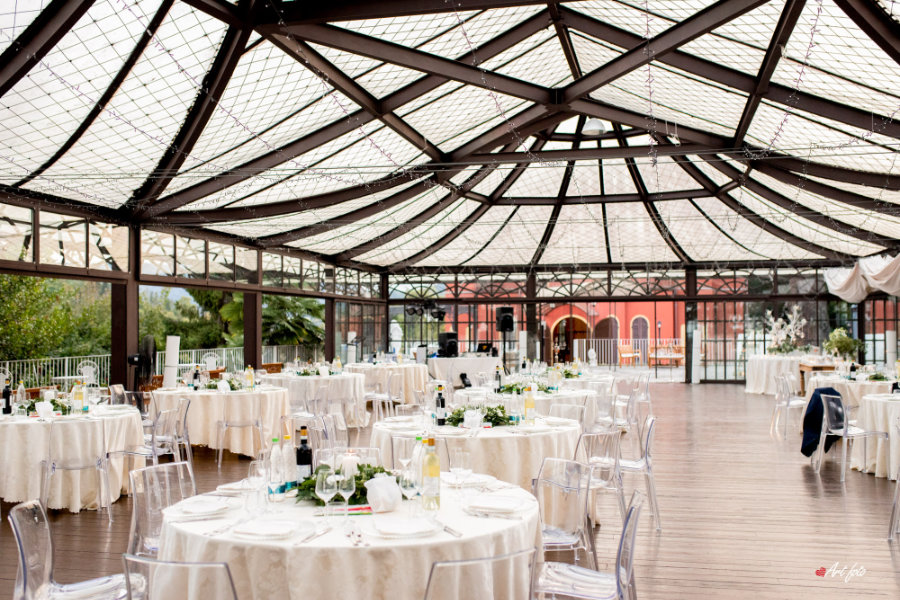
Villa Duchi d'Aostap. 11
Cena · al coperto tra le luci
L'orangerie
- 1Vetrate
- 2Sera
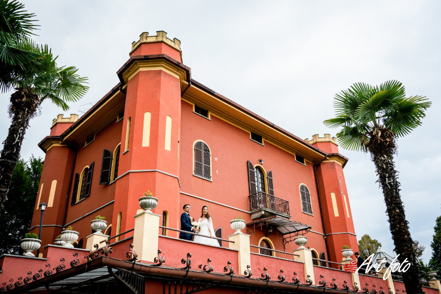
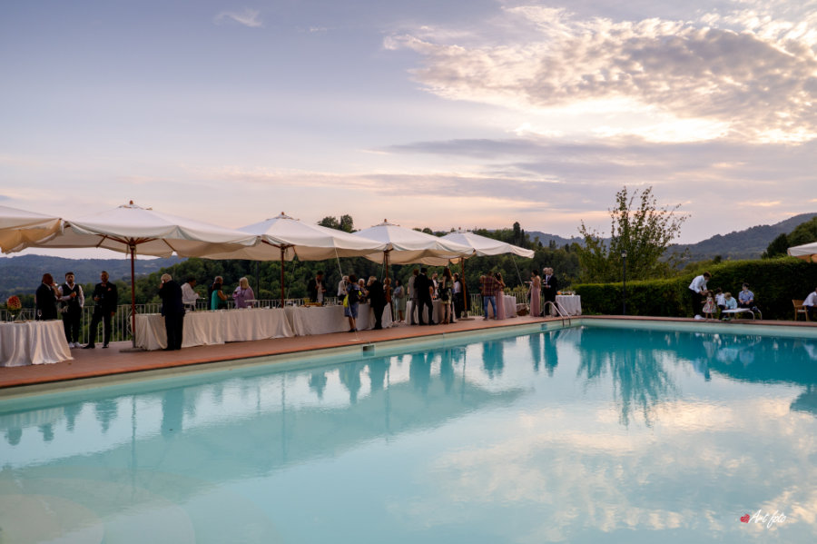
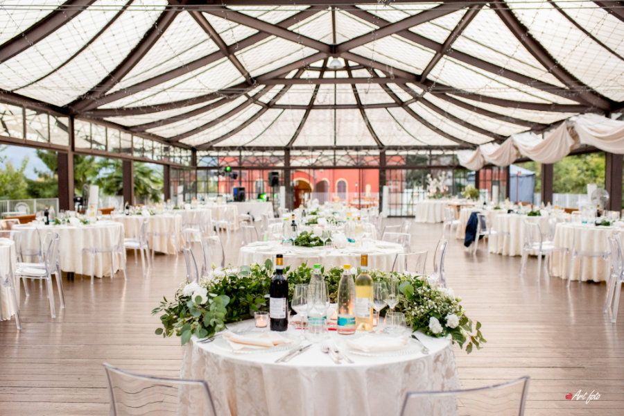
In copertina. Villa Duchi d'Aosta a San Sebastiano da Po (TO): dimora del Settecento in collina con piscina, orangerie e parco, fino a 280 invitati e un solo evento al giorno.
Il luogo
Villa Duchi d'Aosta a San Sebastiano da Po (TO): dimora del Settecento in collina con piscina, orangerie e parco, fino a 280 invitati e un solo evento al giorno.
Villa Duchi d'Aosta è una dimora settecentesca completamente ristrutturata sulla collina di San Sebastiano da Po, con vista sui colli intorno. L'aperitivo si fa a bordo piscina, la cena nell'orangerie o nelle sale del ristorante.
La villa ha un ristorante interno e organizza un solo evento al giorno, con la possibilità di proseguire la festa fino a tarda sera.
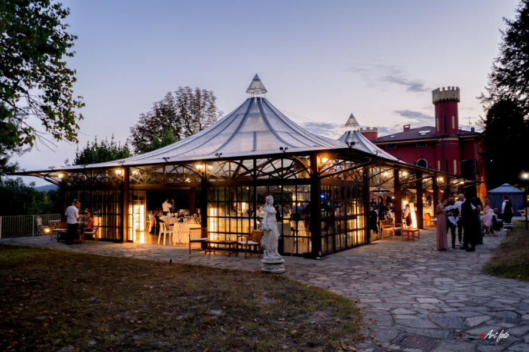
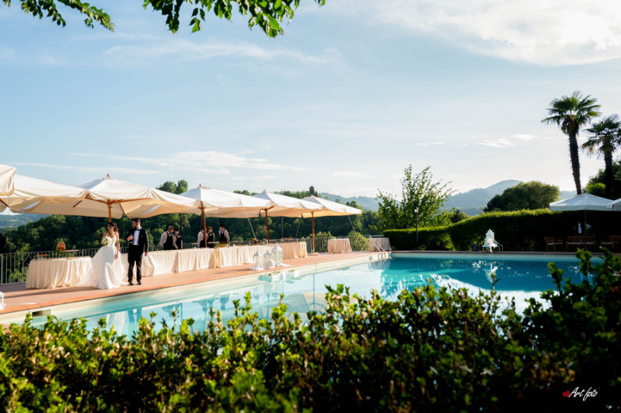
Il posto è incantevole, la sera sembra di esser in una fiaba con tutte le lucine sul soffitto.
Servizio fotografico
L'orangerie, La piscina, La sala ricevimenti, Il parco, Una villa del Settecento, Dentro o fuori: sfogliate Villa Duchi d'Aosta come un servizio a doppia pagina.

Cena · al coperto tra le luci

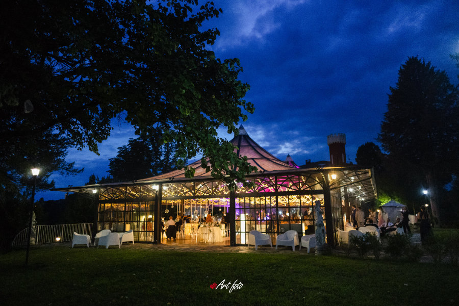
Aperitivo · all'aperto
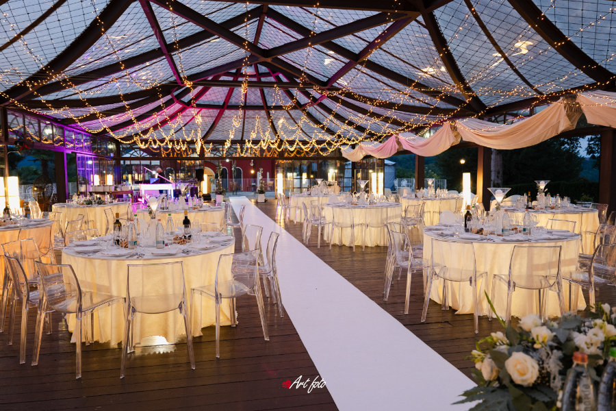
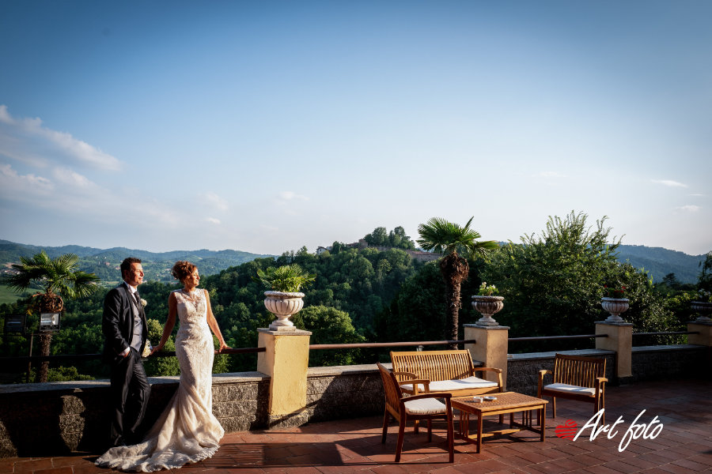
Ricevimento · al chiuso
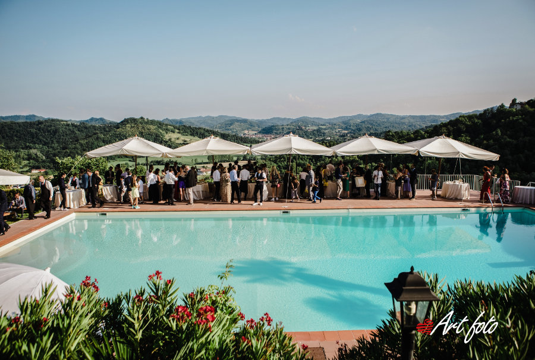
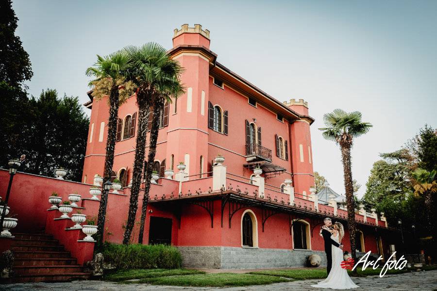
Foto · nel verde
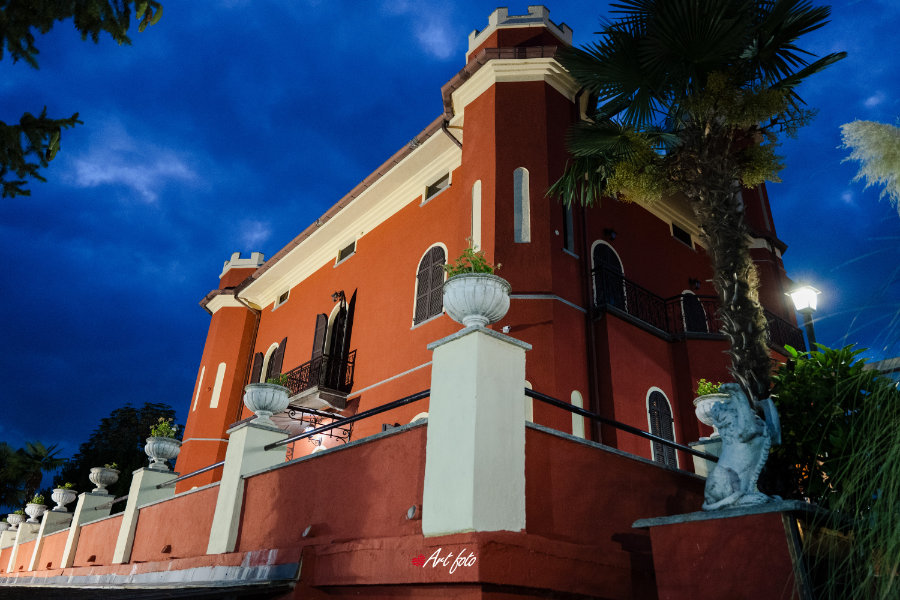
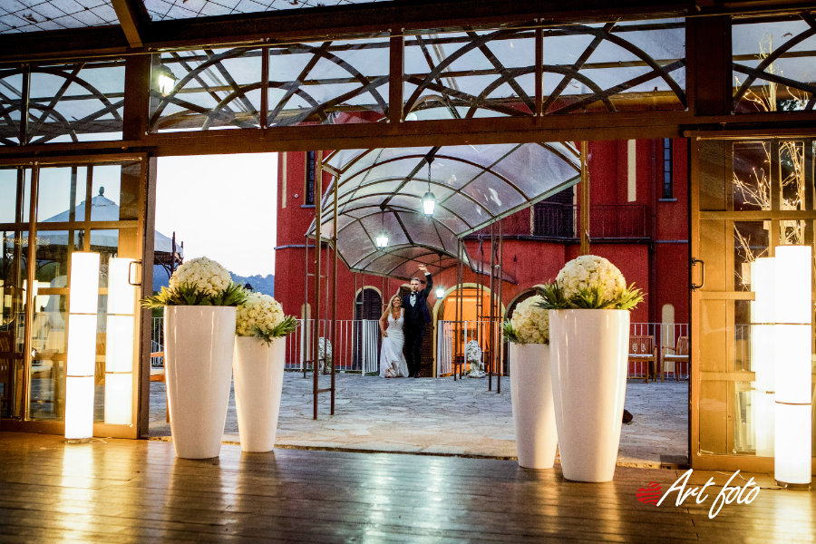
Storia
Ambienti antichi, ristrutturati con cura.
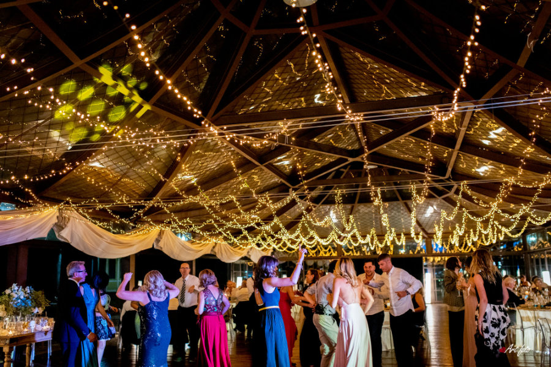
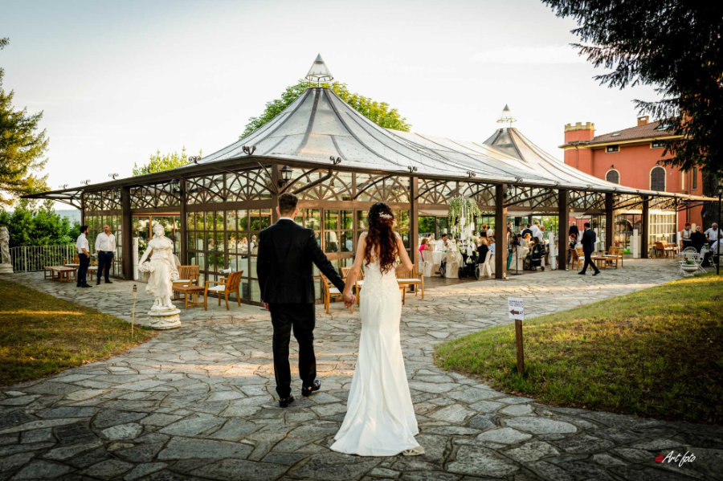
Meteo
Sala, giardini e orangerie: si sceglie in base al tempo.
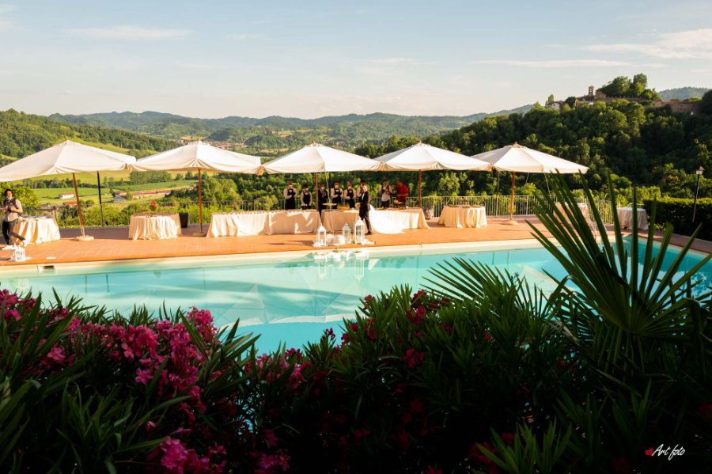
Il vostro giorno
Piatti preparati in casa, partendo da materie prime scelte.
Potete sposarvi in villa, con valore legale.
Orari prolungati in serata, feste danzanti e fuochi d'artificio.
Lo staff segue ogni fase della giornata, dall'arrivo al taglio della torta.
Lettere
«La prima e unica location vista, ci ha rubato subito il cuore.»
Domande
Sala ricevimenti, giardini e orangerie accolgono fino a 280 invitati.
Sì, la villa offre il rito civile con valore legale.
No, la villa organizza un solo evento al giorno.
Sì, solo su appuntamento con la direzione.
Portfolio
Ultima pagina
Una visita a Villa Duchi d'Aosta è il modo migliore per immaginare il vostro giorno. Scriveteci o chiamate per fissarla.